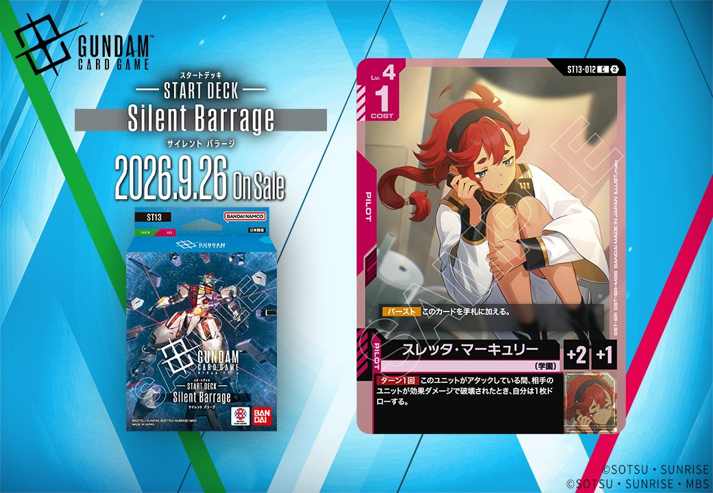
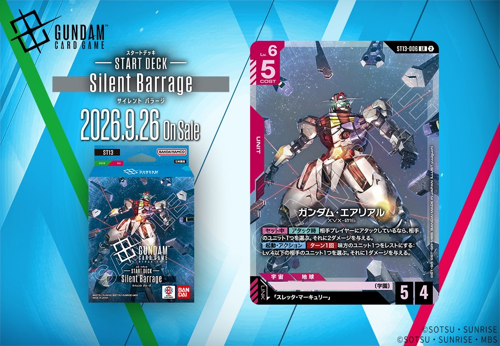

今回は「ST13」より、同日公開されたUNIT「ガンダム・エアリアル」(ST13-006)とPILOT「スレッタ・マーキュリー」(ST13-012)の2枚を紹介します。エアリアルはリンク条件に「スレッタ・マーキュリー」を指定しており、同時収録のこのPILOTとリンクで結ばれる組合せとして機能します。いずれも赤のカードで、発売日は2026-09-26です。

スレッタ・マーキュリー (ST13-012)
| 色 | 赤 | タイプ | PILOT |
| Lv | 4 | コスト | 1 |
| 補正 AP | 2 | 補正 HP | 1 |
| 特徴 | 〔学園〕 | ||
効果: 【バースト】このカードを手札に加える。ターン1回 このユニットがアタックしている間、相手のユニットが効果ダメージで破壊されたとき、自分は1枚ドローする。
スレッタ・マーキュリー(ST13-012)は、COST1でAP2/HP1のLv.4パイロット。効果ダメージで相手ユニットが破壊されたときに1枚ドローする効果を、このユニットがアタック中に限りターン1回発動できる。 同日公開のガンダム・エアリアル(ST13-006)とはリンクが成立し、〔学園〕を共有する赤の組合せ。エアリアルの【セット中】【アタック時】の2ダメージや【起動】の1ダメージで相手ユニットを効果破壊できれば、スレッタのドロー条件を能動的に満たしやすい。格闘戦(ST03-013)や戦技の向上(GD03-109)の効果ダメージも破壊の起点になり得る。 ただしドローはアタック中限定でHP1と場持ちは低いため、除去とドローを両立させる盤面作りが前提となる。2026年9月26日発売。

ガンダム・エアリアル (ST13-006)
| 色 | 赤 | タイプ | UNIT |
| Lv | 6 | コスト | 5 |
| AP | 5 | HP | 4 |
| 特徴 | 〔学園〕 | ||
| リンク条件 | 「スレッタ・マーキュリー」 | ||
効果: 【セット中】【アタック時】相手プレイヤーにアタックしているなら、相手のユニット1つを選ぶ。それに2ダメージを与える。【起動】・アクション ターン1回 味方のユニット1つをレストにする：Lv.4以下の相手のユニット1つを選ぶ。それに1ダメージを与える。
ガンダム・エアリアル(ST13-006)はLv.6/COST5でAP5/HP4の赤ユニット。【アタック時】に相手プレイヤーへアタックしていれば相手ユニット1つに2ダメージ、【起動】で味方1体をレストにしてLv.4以下の相手ユニットへ1ダメージと、盤面除去を2系統備える。 同日公開の「スレッタ・マーキュリー」(ST13-012)とリンク成立し、同一ユニット上で運用可能。スレッタは【バースト】でアタック中に相手ユニットが効果ダメージで破壊されるとターン1回ドローでき、本体の効果ダメージと噛み合う点が構築上の親和性となる。 「戦技の向上」(ST13-006と同色・採用率13.5%)のLv.4以下へ3ダメージ等、赤の効果ダメージ手段と合わせて低Lvユニットを詰めやすい。2026-09-26発売。


関連カード
-
ガンダム・エアリアル(ST13-006)NEW赤系 — 同色・共通特徴: 学園（新カード）
-
 格闘戦(ST03-013)赤系デッキ内採用率23.1% (982デッキ)
格闘戦(ST03-013)赤系デッキ内採用率23.1% (982デッキ) -
 GQuuuuuuX（オメガ・サイコミュ起動時）(GD03-034)赤系デッキ内採用率18.3% (777デッキ)
GQuuuuuuX（オメガ・サイコミュ起動時）(GD03-034)赤系デッキ内採用率18.3% (777デッキ) -
 資源衛星パラオ(GD01-128)赤系デッキ内採用率14.1% (597デッキ)
資源衛星パラオ(GD01-128)赤系デッキ内採用率14.1% (597デッキ) -
 戦技の向上(GD03-109)赤系デッキ内採用率13.5% (571デッキ)
戦技の向上(GD03-109)赤系デッキ内採用率13.5% (571デッキ) -
スレッタ・マーキュリー(ST13-012)NEW赤系 — 同色・共通特徴: 学園（新カード）
-
 スレッタ・マーキュリー(GD04-085)緑系デッキ内採用率0.2% (7デッキ)
スレッタ・マーキュリー(GD04-085)緑系デッキ内採用率0.2% (7デッキ) -
 スレッタ・マーキュリー(GD04-085_p1)緑系デッキ内採用率0% (0デッキ)
スレッタ・マーキュリー(GD04-085_p1)緑系デッキ内採用率0% (0デッキ) -
スレッタ・マーキュリー(GD04-085_p2)緑系デッキ内採用率0% (0デッキ)
-
 スレッタ・マーキュリー(ST01-011)白系デッキ内採用率0.5% (20デッキ)
スレッタ・マーキュリー(ST01-011)白系デッキ内採用率0.5% (20デッキ)